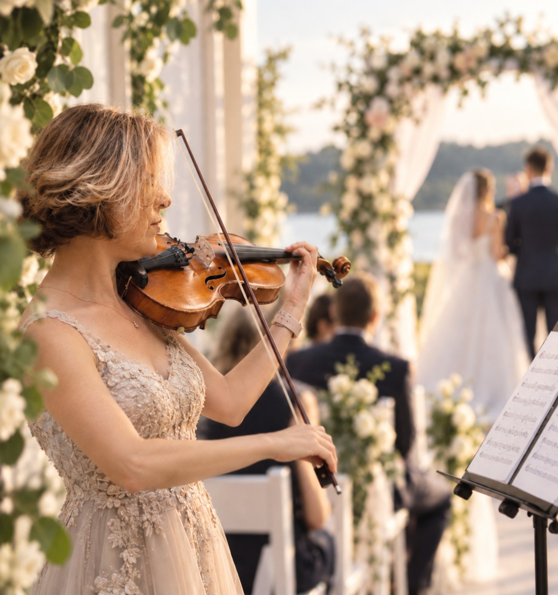
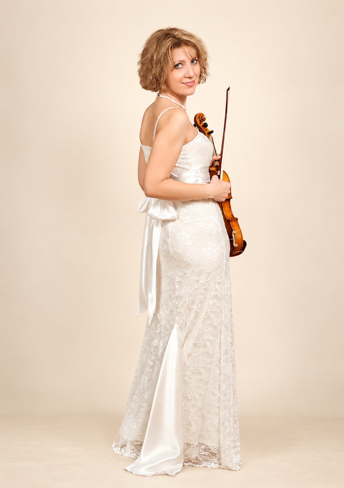

Wedding Ceremony
Music for guest arrival, processional, signing, recessional and other meaningful moments.
Live Violin · Weddings & Events
Elegant live music for your ceremony, cocktail hour, and the moments you want to remember.

The experience
From the first entrance to the relaxed atmosphere of cocktail hour, live violin adds warmth and personality without overwhelming the celebration. Music can be tailored to the style and flow of your day.
Music for guest arrival, processional, signing, recessional and other meaningful moments.
A polished mix of romantic, contemporary and familiar favourites while your guests mingle.
Live violin for intimate celebrations, dinners and other occasions that call for an elegant musical atmosphere.
Hear the music
Short 10–20 second previews will let you explore the sound and style of each collection.
Audio samples can be added gradually. Each category is designed for 2–3 short previews.
Repertoire
Browse by style. The full song list can grow over time without changing the page design.
Processional · Signing · Recessional · Romantic selections
Elegant favourites · Contemporary songs · Relaxed background music
Modern favourites arranged for violin
Bollywood favourites and selected cultural requests
Timeless melodies and sophisticated standards
Classical favourites for ceremonies and elegant events
Meet your violinist
Mira brings the sound of live violin to weddings and special events with careful preparation, elegant presentation and music selected to suit each part of the celebration.
Based in Ottawa • Available for travel
Tell me about your wedding →
Your date
Share your date, location and the part of your celebration where you would like live violin. I’ll be happy to discuss the music, your ideas and the details that will make the day feel personal.
Inquire About Your Date